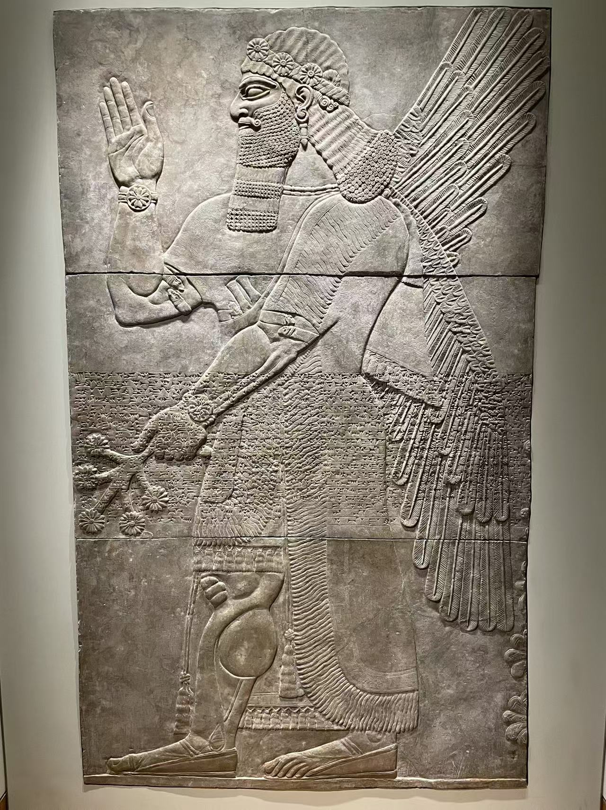
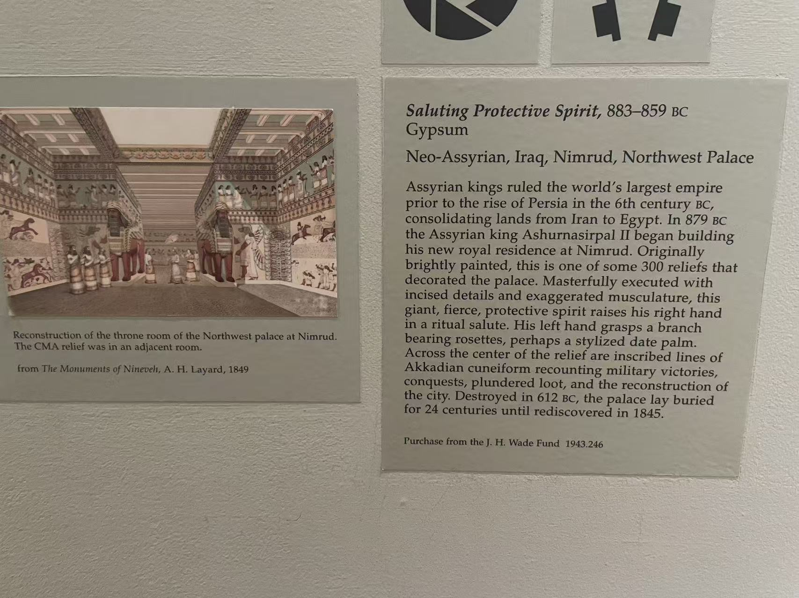

博物馆札记 / 古代西亚 / 尼姆鲁德 NIMRUD / NORTHWEST PALACE
尼姆鲁德的 亚述西北宫浮雕 · 海外所见
鹰首、人首，举手致意或持桶面向圣树。从美国的博物馆到梵蒂冈，这些亲见浮雕把观看带回公元前9世纪尼姆鲁德的西北宫。完整的身体、成对的半身残片与单独的头像，保存着同一座宫殿不同的细节。
从浮雕看起 ↓ 王都与宫殿 回到宫殿房间 并看这些浮雕 
举手致意的护佑精灵 · 克利夫兰 · 1943.246 石板上的守护者 本辑按六组亲见记录整理：金贝尔的一组含两件残片，克利夫兰的拼合壁板仍计作一件馆藏作品。
休斯顿 克利夫兰 堪萨斯城 圣安东尼奥 沃思堡 梵蒂冈 鹰首有翼守护者 Guardian Figure
收藏／展出 休斯顿美术馆
编号 80.53
年代 公元前883—859年
材料 石膏石（Gypsum）
尺寸 高107 × 宽66 × 厚3.8厘米 鹰喙向左伸出，羽翼却在身体右侧展开。举起的手握着锥形器物，另一只手提桶；树状纹样紧贴人物，胸前还露出两把刀的柄。鸟首与人的手臂、衣袍连成一体，细密的羽毛与衣缘刻线让这块仅一米多高的壁板仍有许多近看的地方。
现场展签将这种形象联系到古代贤者 apkallu，并从刀具解释其防御、护佑意味。它并不因此等同于某一位有名字的神。文字在这件石板的顶部形成窄带，与克利夫兰与纳尔逊横穿身体的铭文很不一样。
馆方来源记录把它追溯到19世纪尼姆鲁德的发掘：1853年进入英国哈罗比伯爵家族收藏，此后由家族传承。1980年，休斯顿美术馆购入这件浮雕；原来所在的宫殿房间尚未见于该馆记录。
休斯顿美术馆：Guardian Figure（含来源记录） ↗
举手致意的护佑精灵 · Merton摄 · 点击放大 现场展签 ＋ 
举手致意的护佑精灵 · 现场展签 举手致意的护佑精灵 Saluting Protective Spirit
收藏／展出 克利夫兰艺术博物馆
编号 1943.246
年代 公元前883—859年
材料 石膏石（Gypsum）
尺寸 整体高229.9 × 宽137厘米 这位人首精灵抬起右手，掌心向前；左手握着植物枝条，枝端带有花形装饰。这里没有休斯顿与纳尔逊两件的桶与锥形器物，动作也更接近致意。腕上的玫瑰花形饰物、层层卷曲的胡须、排列整齐的羽毛，以及垂下的衣服流苏，各自有不同的刻线节奏。
密集的楔形文字横穿手臂、衣袍与羽翼，人物轮廓并没有让文字停下来。照片中的横向接缝显示壁板由数块拼合，共同构成一件馆藏浮雕。馆方书目与楔形文字数字图书馆（CDLI）的 P427317 条目，将它对应到西北宫S室的 S-06号壁板。
馆方开放档案记录了它在阿默斯特学院的旧藏经历，随后经纽约布鲁默画廊，于1943年进入克利夫兰艺术博物馆。今天单独观看的这块高逾两米的石板，原本属于宫殿中连续排列的建筑装饰。
克利夫兰馆藏打印页：作品、来源与S-06书目 ↗ · 楔形文字数字图书馆 CDLI：P427317／S-06 ↗
圣树旁的有翼精灵 Winged Genie Fertilizing a Date Tree
收藏／展出 纳尔逊－阿特金斯艺术博物馆
编号 40-17
年代 公元前884—860年
材料 石灰岩（Limestone）
尺寸 整体高231.78 × 宽180.98厘米 人首精灵戴着角冠，右手的锥形器物伸向树纹，左手提桶，胸前露出刀柄。树状纹样在人物两侧出现，卷曲胡须、羽毛与植物枝节布满石面，铭文又从身体中部横贯过去。馆方英文题名采用“为椰枣树授粉”的解释；眼前的树却是高度程式化的纹样，而非植物写生。
这件有较清楚的原位线索：馆方来源档案列出西北宫L室（Room L），所引 Meuszyński 研究的书目条目进一步标为 L-10。它与克利夫兰的 S-06 来自同一宫殿的不同房间；字母指房间，完整编号则定位到具体壁板。
19世纪，它经亨利·罗林森与在摩苏尔的传教士德怀特·惠特尼·马什，进入圣路易斯商业图书馆收藏。1940年，纳尔逊购入这块浮雕。它的流转与休斯顿那件的英国家族收藏经历不同。
纳尔逊：Winged Genie Fertilizing a Date Tree（含来源与书目） ↗ · 大都会艺术博物馆：圣树与护佑形象 ↗
尼姆鲁德有翼守护者头像 · Merton摄 · 点击放大 现场展签 ＋ 尼姆鲁德有翼守护者头像 · 现场展签 宫殿复原与壁板位置说明 · 现场展板 尼姆鲁德有翼守护者头像 Relief with the Head of a Winged Figure
收藏／展出 芝加哥艺术博物馆；在圣安东尼奥美术馆借展
编号 L.2024.4（现场借展号）
年代 前883—859年
材料 石膏质雪花石，残留颜料
尺寸 约67.3 × 58.4 × 5.1厘米（馆方英寸值换算） 角冠下，发辫与胡须被刻成一排排卷曲单元，眉眼与鼻梁组成朝向左侧的轮廓。头像虽已脱离身体，冠饰、耳坠与卷发的密度，仍让它与全身守护者保持可见的联系。
馆方把这块头像归于尼姆鲁德西北宫的护佑人物壁板，现场复原说明进一步将它对应到S室S-10。克利夫兰1943.246则对应同室S-06：在克利夫兰与圣安东尼奥看到的两块浮雕，由此接回同一间接待空间。壁板号分别记录，头像的原手势与持物不能从现存部分直接看见。
据现场说明，George F. Harding于1926年购入这块头像；本次由芝加哥艺术博物馆George F. Harding Collection出借。圣安东尼奥是观看地点，L.2024.4为现场借展号。脱离原墙后的头像，在展厅复原说明中重新接回S室南墙，现存部分与留在原址的壁板须分别理解。
SAMA: Kingship and Power in Assyria ↗ · 圣安东尼奥美术馆：头像展签与S室复原说明（现场摄影） ↗
成对的有翼守护者 · Merton摄 · 点击放大 现场展签 ＋ 成对的有翼守护者 · 现场展签 成对的有翼守护者 Pair of Winged Deities
收藏／展出 金贝尔艺术博物馆，沃思堡
编号 AP 1981.04 a,b
年代 约公元前874—860年
材料 石膏石（Gypsum）
尺寸 a：高92 × 宽70厘米；b：高90.7 × 宽73.5厘米 两张侧脸隔着一道空隙相向而立。角冠、耳坠与卷曲胡须仍然清楚，背后的羽翼伸向外侧，胸前垂下的细密刻线与羽毛形成不同的节奏。眼前是两尊全身人物各自留下的上半部；一起观看时，面向彼此的方向感比残存的体量更先显现。
馆方将它们解释为圣树旁参与净化或护佑仪式的有翼人物，原应左手持桶、右手持锥形器物。桶与下半身已经不在这两块残片中，完整动作来自馆方对原图像的解释。两件均出自L室，与纳尔逊的L-10有房间层面的联系；现有展陈的相向排列尚不足以确定古代两块壁板的间距。
馆方来源表记载，它们曾由苏格兰Munro-Ferguson家族传藏，1980年经伦敦Bruce and Ingrid McAlpine Ancient Art，1981年由金贝尔艺术基金会购入。来源表对更早的“1854年在孟买取得”保留“据称”的限定。
金贝尔：Pair of Winged Deities（尺寸与来源） ↗
原位与资料注 ＋ 现场展签与官网都记L室；展签所列874—860 BCE，官网加约年标记。官网分别给出a、b两件尺寸，本页不以当前合影的左右顺序代替a、b编号。
金贝尔：Pair of Winged Deities（尺寸与来源） ↗ · 金贝尔：成对有翼守护者现场展签 ↗
礼拜圣树的鹰首有翼精灵 · Merton摄 · 点击放大 现场展签 ＋ 礼拜圣树的鹰首有翼精灵 · 现场展签 ROOMS AND FRAGMENTS
回到宫殿房间 SIDE BY SIDE
并看这些浮雕 金贝尔两件残片各高约91—92厘米；休斯顿那件高约1.07米，克利夫兰与纳尔逊两件高约2.3米，圣安东尼奥所见头像高约67厘米。照片按各自比例展示，彼此并非实物等比例。
鹰首与人首 休斯顿与梵蒂冈的长喙、颈部羽毛，与人首守护者的面容、卷曲胡须形成对照。金贝尔的两张侧脸相向，在圣安东尼奥看到的头像则单独留下冠饰与面容。
手势与所持物 休斯顿、纳尔逊与梵蒂冈都可见举起的锥形器物和提桶。克利夫兰举起空着的右手，左手持枝条。金贝尔残片的全身动作由馆方解释补充，观看时可将现存部分与这一解释相互对照。
石面上的羽翼、衣饰与文字 羽毛的层列、胡须的卷曲和衣缘的流苏形成不同密度的刻线。休斯顿的文字在顶部；克利夫兰与纳尔逊的文字带横穿人物身体。残片与整幅壁板留下的画面范围不同，现存石面未见铭文，并不说明原壁板从未刻字。